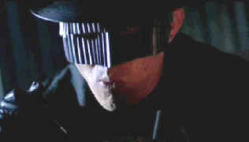

|
Black
Mask/C,B+ |
|
Artisan/1999/102m/ANA
1.85 |
Producer
Tsui Hark and a group of Kung Fu action film veterans stack a
tower of action stunts onto an unstable screenplay inspired by
lowbrow comics. The result, Black Mask, starring Hong
Kong action movie icon Jet Li, is often entertaining on a visual
level, but remaining wholly unsatisfying in any other way.
 |
| Nice
outfit Jet . ©Columbia |
Made
in 1996 and dressed up with a brand new dub for its 1999 US
release, Black Mask has dialogue bad enough to make you
laugh. Fortunately, the action is often ferocious enough to
withstand dumb dubbing and a soporific script.
Catch this amazing story line. Jet Li
plays a refugee from a government superhuman experiment gone
wrong. Don’t they always go wrong. Somehow, Li is the only one
who isn’t a bad guy. He decides to disappear into the role of
mild-mannered librarian, but is pulled back into Kung Fu action
when his friend, an action cop, is up against a powerful new
evil force. You guessed it. The bad guys are also refugees from
that superman government program. There’s a girl to make you
laugh, a girl to break your heart and a villain who needs a new
beautician.
If all you want is action galore
punctuated by wild stunts and death defying wire work, I suppose
Black Mask will be your fix. While I could admire the kicks and
jumps, the characters weren’t wild enough to open up my action
sinuses. Silly comic book stuff is not my thing. I like the more
fantastic Hong Kong action stuff that borders on fantasy and the
underworld of dark and ugly beings. Black Mask is too
obvious in wanting to combine the success of the John Woo school
of filmmaking with Tsui Hark’s own brand of kung fu glory.
Artisan delivers Black Mask
as an anamorphic DVD. It looks consistently sharp and even sounds
better. The slick images are reflected on black leather costumes
and glistening night shoots. Plenty of picture pop and sonic
bass provide enough noise and glitter to disguise the
storytelling ineptitude. Included in the DVD package are
numerous TV spots, the theatrical trailer, a music video, an
unimaginative interactive game, and direct access to all the
fight sequences, eight in all.
|
|